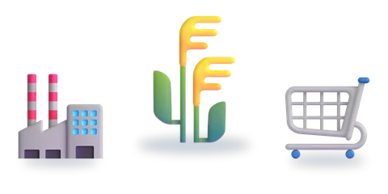

الفلاحة والصناعة والتجارة

المستوى الرابع — الوحدة الرابعة
خمسة أسابيع: أربعة لإرساء التعلّمات، والخامس للتقويم والدعم. اختر القسم، ثمّ الدرس. بطاقات «مراجعة» دروسٌ من مستوى أو وحدة أخرى.
الصرف والتحويل


التراكيب


الإملاء


التقويم والدعم
الأسبوع الخامس: تقويم حصيلة الوحدة، ثمّ دعم ما لم يُتقَن.
الرسوم: Twemoji (CC-BY 4.0) وFluent Emoji من Microsoft (MIT). الأصوات: صوت عربي اصطناعي.